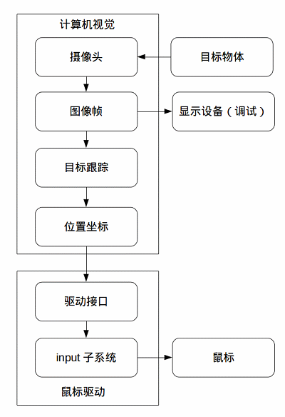
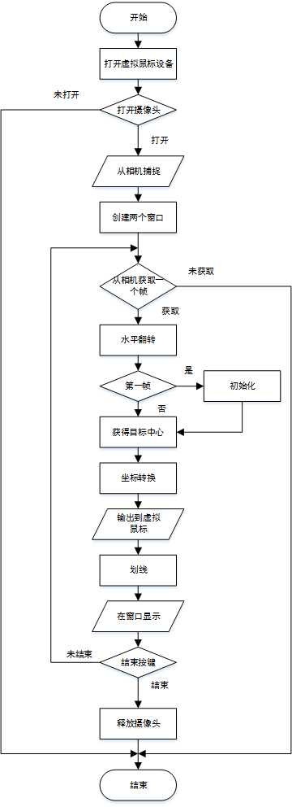
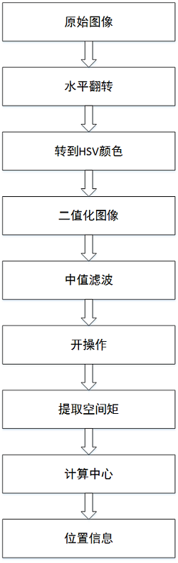
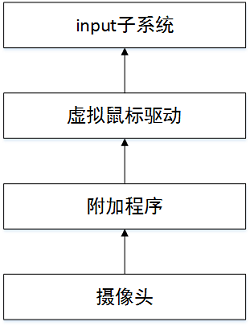
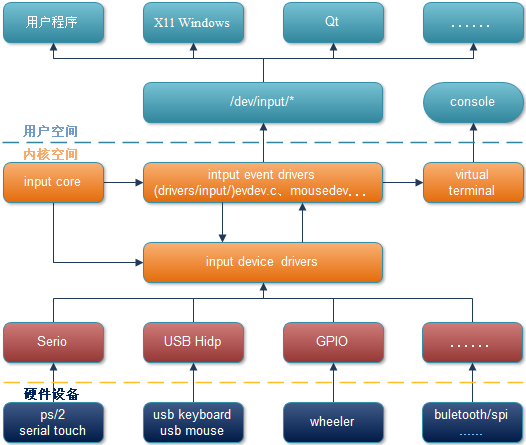
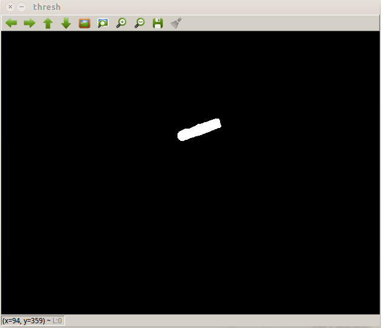
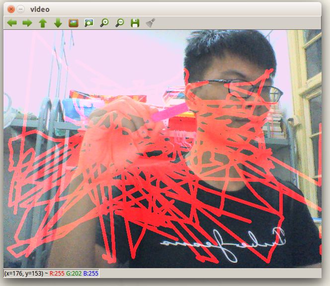
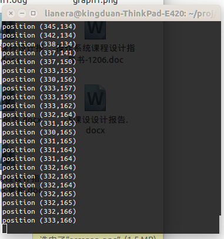

基于计算机视觉的虚拟鼠标
概述
设计内容
设备驱动程序设计, 要求如下：
- 设计Windows XP或者Linux操作系统下的设备驱动程序；
- 设备类型可以是字符设备、块设备或者网络设备；
- 设备可以是虚拟的也可以是实际设备；
- 编写测试应用程序，测试对该设备的读写等操作。
功能需求
- 实现鼠标驱动程序，并提供接口。
- 通过手势控制指针的移动。
- 手上可用颜色块标定。
基本概念和原理
环境选择和工具
- 操作系统：Ubuntu(Linux) 14.04 LTS 64bit
- 编辑器：vim
- 编译器：gcc，g++
- 调试器：gdb
- 开发库：opencv
- 其他：make
基本架构
用附加程序通过计算机视觉技术，获取目标的位置，并用虚拟鼠标驱动实现鼠标位置的控制。

模块及技术
- 视频采集
opencv自带视频采集接口，可使用cvCaptureFromCAM函数从摄像头捕获视频。
- 目标跟踪
目标跟踪采用计算机视觉技术，核心的技术是数字图像处理和图像分割技术，数字图像处理是通过计算机对图像进行去除噪声、增强、复原、分割、提取特征等处理的方法和技术。 图像分割就是把图像分成若干个特定的、具有独特性质的区域并提出感兴趣目标的技术和过程。它是由图像处理到图像分析的关键步骤。
- opencv
OpenCV的全称是：Open Source Computer Vision Library。OpenCV是一个基于（开源）发行的跨平台计算机视觉库，可以运行在Linux、Windows和Mac OS操作系统上。它轻量级而且高效——由一系列 C 函数和少量 C++ 类构成，同时提供了Python、Ruby、MATLAB等语言的接口，实现了图像处理和计算机视觉方面的很多通用算法。
OpenCV用C++语言编写，它的主要接口也是C++语言，但是依然保留了大量的C语言接口。该库也有大量的Python, Java and MATLAB/OCTAVE (版本2.5)的接口。这些语言的API接口函数可以通过在线文档获得。如今也提供对于C#,Ch, Ruby的支持。
所有新的开发和算法都是用C++接口。
- 驱动模式
采用platform驱动模式，通过结合Linux input子系统实现虚拟鼠标驱动。
platform驱动模式是一套新的驱动管理和注册机制：platform_device 和 platform_driver 。Linux 中大部分的设备驱动，都可以使用这套机制，设备用 platform_device 表示；驱动用 platform_driver 进行注册。
Linux platform driver 机制和传统的device driver机制（即：通过 driver_register 函数进行注册）相比，一个十分明显的优势在于platform机制将设备本身的资源注册进内核，由内核统一管理，在驱动程序中用使用这些资源时，通过platform device提供的标准接口进行申请并使用。
- input子系统
输入设备(如按键,键盘，触摸屏，鼠标等)是典型的字符设备，其一般的工作机制是低层在按键，触摸等动作发生时产生一个中断(或驱动通过timer定时查询)，然后cpu通过外部存储器总线读取键值，坐标等数据，放一个缓冲区，字符设备驱动管理该缓冲区，而驱动的read()接口让用户可以读取键值，坐标等数据。
在Linux中，输入子系统是由输入子系统设备驱动层、输入子系统核心层(Input Core)和输入子系统事件处理层(Event Handler)组成。其中设备驱动层提供对硬件各寄存器的读写访问和将底层硬件对用户输入访问的响应转换为标准的输入事件，再通过核心层提交给事件处理层；而核心层对下提供了设备驱动层的编程接口，对上又提供了事件处理层的编程接口；而事件处理层就为我们用户空间的应用程序提供了统一访问设备的接口和驱动层提交来的事件处理。所以这使得我们输入设备的驱动部分不在用关心对设备文件的操作，而是要关心对各硬件寄存器的操作和提交的输入事件。
详细设计
目标跟踪程序流程图

目标跟踪程序过程实现
连接虚拟鼠标设备
- 采用linux的IO操作方法
- 打开设备：fd=open(“/sys/devices/platform/cammouse/vmevent”, O_RDWR);
- 写入设备：write(fd,p,strlen(p)+1);
- 关闭设备：close(fd);
相机视频采集
采用opencv自带的视频采集方法，从摄像头设备采集。
CvCapture* capture = cvCaptureFromCAM(0);
监测调试
用opencv的GUI套件创建窗口。
cvNamedWindow("video");
cvNamedWindow("thresh");
- 获取图像
从相机获取的一个帧即某个时刻的一副图像。
frame = cvQueryFrame(capture);
- 获得目标中心
采用的是计算机视觉技术，通过对原始图像进行图像处理与分割，得到目标，并通过矩阵运算，得出目标的中心点。
以下是获得目标的过程：

其中包括的过程如下：
水平翻转
- 从相机获取的图像是正向的，而要实现的操纵鼠标应该是镜面方向的，所以应该对获取的图像进行一次翻转，采用的是opencv的函数cvFlip。
- >
cvFlip(frame,NULL,1);
HSV空间转换
- 这个模型中颜色的参数分别是：色调（H），饱和度（S），亮度（V），相对于RGB空间，HSV空间能够非常直观的表达色彩的明暗，色调，以及鲜艳程度，方便进行颜色之间的对比，能够更好地区分颜色范围，并且可以增大S和V的范围使得亮度和饱和度对检测的影响较小。
- >
cvCvtColor(img, imgHSV, CV_BGR2HSV);
二值化
- 图像的二值化，就是将图像上的像素点的灰度值设置为0或255，也就是将整个图像呈现出明显的只有黑和白的视觉效果。
- 一幅图像包括目标物体、背景还有噪声，要想从多值的数字图像中直接提取出目标物体，最常用的方法就是设定一个全局的阈值T，用T将图像的数据分成两部分：大于T的像素群和小于T的像素群。将大于T的像素群的像素值设定为白色（或者黑色），小于T的像素群的像素值设定为黑色（或者白色）。
中值滤波
- >
IplImage* imgColorThresh = GetThresholdedImage(img); - 中值滤波法是一种非线性平滑技术，它将每一像素点的灰度值设置为该点某邻域窗口内的所有像素点灰度值的中值。采用中值滤波的目的是去除椒盐噪声。中值滤波是基于排序统计理论的一种能有效抑制噪声的非线性信号处理技术，中值滤波的基本原理是把数字图像或数字序列中一点的值用该点的一个邻域中各点值的中值代替，让周围的像素值接近的真实值，从而消除孤立的噪声点。方法是用某种结构的二维滑动模板，将板内像素按照像素值的大小进行排序，生成单调上升（或下降）的为二维数据序列。二维中值滤波输出为g（x,y）=med{f(x-k,y-l),(k,l∈W)} ，其中，f(x,y)，g(x,y)分别为原始图像和处理后图像。W为窗口，在这里设置窗口大小为5*5且窗口形状取矩形。
- >
开操作
- 一个开操作是一个腐蚀操作再接着一个膨胀操作使用相同的结构元素。开操作需要两个输入数据一个是要开操作的像素数据，一个是开操作的结构元素，根据开操作的要求不同，结构元素可以是圆形，正方形，矩形等，这里采用正方形。
- >
cvMorphologyEx(midSmooth,openOp,NULL,NULL,CV_MOP_OPEN,1);
提取空间矩
- 我们可以使用cvContoursMoments函数、cvMoments函数方便的得到轮廓的矩集，然后再相应的方法或函数获取各种矩。
- double moment10 = cvGetSpatialMoment(moments, 1, 0);
坐标转换
目标在摄像头中的坐标与屏幕的坐标不相匹配，应该进行转换，转换的方法是：
int scrX=(int)((float)posX/frame->width*1366);
int scrY=(int)((float)posY/frame->height*768);
输出到虚拟鼠标
得到目标的中心点之后，需要输出到虚拟鼠标驱动，以控制鼠标的位置，在这里，需要把虚拟鼠标驱动程序创建的设备文件相对应。
write(fd,p,strlen(p)+1);
- 窗口显示
在调试的过程中，有许多方案，每个方案又有许多步骤，这些步骤可以通过实时的窗口显示出来，以观察其效果。
cvShowImage("video", frame);
- 按键检测
由于该系统是实时的，需要提供一个程序的出口，而鼠标已经被控制了，所以只能通过键盘来退出，采用ESC按钮来进行退出。
int c = cvWaitKey(10);
if(c!=-1)
break;
虚拟鼠标驱动
虚拟鼠标驱动是连接附加程序与input子系统的纽带，将附加程序发过来的消息进行翻译转换和处理，并且转发给input子系统。
驱动采用的是platform驱动模式。
架构图

虚拟鼠标驱动的实现
platform驱动模式
总线设备驱动模型主要包含总线、设备、驱动三个部分，总线可以是一条真实存在的总线，例如USB、I2C等典型的设备。但是对于一些设备（内部的设备）可能没有现成的总线。Linux 2.6内核中引入了总线设备驱动模型。总线设备驱动模型与之前的三类驱动（字符、块设备、网络设备）没有必然的联系。设备只是搭载到了总线中。在linux内核中假设存在一条虚拟总线，称之为platform总线。platform总线相比与常规的总线模型其优势主要是platform总线是由内核实现的，而不用自己定义总线类型，总线设备来加载总线。platform总线是内核已经实现好的。只需要添加相应的platform device和platform driver。具体的实现过程主要包括如下的过程：
两者的工作顺序是先定义platform_device -> 注册 platform_device->，再定义 platform_driver-> 注册 platform_driver。 整体而言只需要完成两个步骤，也就是设备的实现和驱动的实现，每一个实现都包括相关结构体的定义和注册。
input输入子系统整体流程
Input子系统是分层结构的，总共分为三层： 硬件驱动层，子系统核心层，事件处理层。 其中硬件驱动层负责操作具体的硬件设备，这层的代码是针对具体的驱动程序的，需要驱动程序的作者来编写。子系统核心层是链接其他两个层之间的纽带与桥梁，向下提供驱动层的接口，向上提供事件处理层的接口。事件处理层负责与用户程序打交道，将硬件驱动层传来的事件报告给用户程序。 各层之间通信的基本单位就是事件，任何一个输入设备的动作都可以抽象成一种事件，如键盘的按下，触摸屏的按下，鼠标的移动等。事件有三种属性：类型（type），编码(code)，值(value)，Input子系统支持的所有事件都定义在input.h中，包括所有支持的类型，所属类型支持的编码等。事件传送的方向是 硬件驱动层–>子系统核心–>事件处理层–>用户空间
其结构图如下：

设备模块初始化
通过module_init(cammouse_init)来指定初始化函数，在初始化函数中，进行了platform设备的注册、sysfs节点的创建、设备空间的分配以及input子系统的注册。
设备模块的注销
通过module_exit(cammouse_uninit)来指定注销的函数，在cammouse_uninit中，进行的操作有input子系统的注销、sysfs节点的移除、platform设备的注销。
Platform设备注册与注销
注册函数，通常在驱动初始化函数中调用：
int platform_driver_register(struct platform_driver *drv)
释放函数，通常在驱动退出函数调用：
void platform_driver_unregister(struct platform_driver *drv)
完成相关的注册以后总线、设备、驱动的大概框架就完成了。
但是这只是常用的框架，还不能在应用程序中使用。 基于平台驱动的设备驱动都是基于总线架构的，基本的实现过程与之前的简单字符设备存在较大的差别，主要的区别在驱动的初始化不在是平台设备驱动的初始化函数中实现，而是在probe函数中实现。而驱动的卸载函数则是在remove函数中实现。
Sysfs设备接口
sysfs接口可以使得可以在用户空间直接对驱动的这些变量读写或调用驱动的某些函数，是设备驱动程序与其他程序进行交互的接口。
创建过程：sysfs_create_group(&cammouse_dev->dev.kobj, &cammouse_attr_group);
移除过程：sysfs_remove_group(&cammouse_dev->dev.kobj, &cammouse_attr_group);
上报的事件声明
在input子系统中，只有事先声明上报的事件，才能在后面进行相应事件的上报。 这里采用了两套事件系统，一套是相对移动事件，另一套是绝对移动事件。 其实现过程为：
#ifdef REL
/*相对移动*/
set_bit(EV_REL, cammouse_input_dev->evbit);
set_bit(REL_X, cammouse_input_dev->relbit);
set_bit(REL_Y, cammouse_input_dev->relbit);
set_bit(REL_WHEEL, cammouse_input_dev->relbit);
#else
/*绝对移动*/
set_bit(EV_ABS, cammouse_input_dev->evbit);
set_bit(ABS_X, cammouse_input_dev->absbit);
set_bit(ABS_Y, cammouse_input_dev->absbit);
//set_bit(REL_WHEEL, cammouse_input_dev->relbit);
input_set_abs_params(cammouse_input_dev, ABS_X, 0, SCR_WIDTH, 0, 0); //设置X范围
input_set_abs_params(cammouse_input_dev, ABS_Y, 0, SCR_HEIGHT, 0, 0); //设置Y范围
#endif
事件转换
驱动程序通过write_cammouse函数进行事件的转换以及上报，其实现的过程有数据转换、上报坐标、上报点击事件。
其原型为：
static ssize_t write_cammouse(struct device *dev,
struct device_attribute *attr,
const char *buffer, size_t count)
运行效果
图像处理窗口

轨迹窗口

坐标信息终端

当目标色块移动时，鼠标移到对应位置，且相对稳定，符合预期效果。
使用说明
#转到目录
cd cammouse
#编译
make
#加载驱动程序
sudo insmod cammouse
#开启附加程序
sudo ./track
出现两个调试窗口，一个是图像处理之后的效果，一个是原图像加上目标色块运动的轨迹。
同时原终端里输出坐标信息。
关闭附加程序：当程序窗口获得焦点时ESC按键
卸载驱动程序：sudo rmmod cammouse
总结
这次课程设计我们做的是在Linux系统下模拟的鼠标驱动，并结合计算机视觉及数字图像处理的相关知识，利用摄像头，使用易辨识的鲜亮色块模拟鼠标，实现了模拟鼠标的移动功能。这项设计方向新颖，并有着极好的发展前景，可以朝着手势控制方向发展，在游戏、办公、智能家居等方面都可以有极大的应用空间。这次设计是我们基于已学的书本知识加上自己的想法实现的，虽然功能暂时不是非常完整，但实现过程却并不容易。在设计过程中，我们曾尝试使用两种不同的颜色实现模拟鼠标的移动和点击，但由于两个不同颜色色块的二值化图像无法实现，无法达到预期的功能。这次课设还有诸多不足之处，除了功能上的缺陷外，还有关于模拟鼠标的精度问题，防干扰性等，相关算法还需要花费时间和精力去改进。这次课程设计不仅提高了我们对计算机操作系统方面知识的理解程度，还提高了我们对数字图像处理方面知识的应用能力，让我们真正意义上地实现了学科交互，不仅使我们的编程能力得到提升，还提高了我们的创新能力，这是对还处于学生阶段的我们来说是最大的收获，为我们今后的工作之路奠定了坚实的基础。
参考资料
- 宋宝华等. Linux设备驱动开发详解. 人民邮电出版社. 2010
- 汤小丹等. 计算机操作系统. 西安电子科技大学出版社. 2007
- Opencv http://baike.baidu.com/link?url=vwohBALd3pgXyugCwCXW6q4Rifl9EZZzBlho2ZPBRWIVEbAINFPOiawGmJbh3gZYghUQ4a10glDeSA50kOnDtK
- HSV颜色模型 http://baike.baidu.com/link?url=SeC998zpjDBziataP7R_TPkwtJS4m3Y9A4RBn_73HQZ13OVUZ48NOUwS1djWxwByXnusozgw4DjRzgkuf7Rt-BPaqkVc6aZ5z7ocq5OGElFkNK2AOJmM1QYT1z4Ca71YFvj5329oDZtLf5kViKCWav8yAPejF4_bMS0z3pPqalhgE5W6m7FWvrYddzw0ELlnehI0fTWDaq-VbOK-C5jlsa
- 二值化 http://baike.baidu.com/link?url=krE4rPKGahT0eqotesvngbztc9CF3b1bRoNtj3wiWXONDi1iMPMNATpsRhi-aj-dOJnH038OPGDYzEMwisHbWK